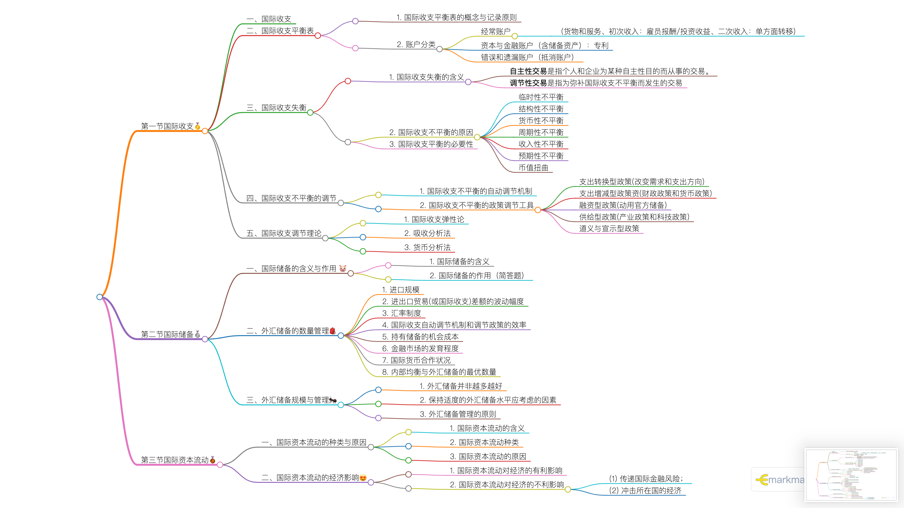
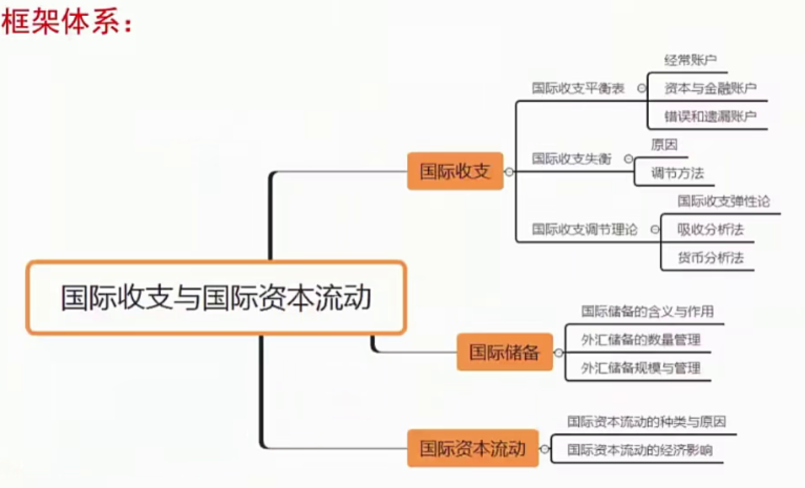
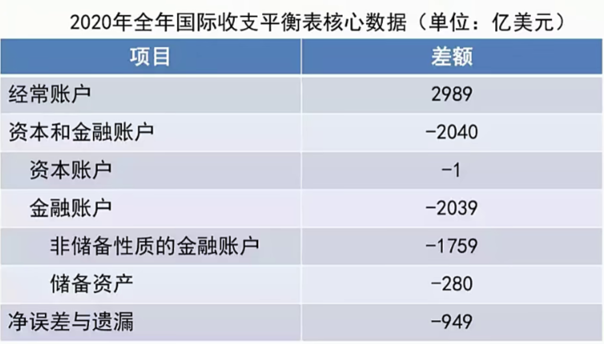

[toc]
第一节国际收支🥇
一、国际收支
国际收支是在一定时期内一个国家或地区与其他国家或地区之间进行的全部经济交易的系统记录。
1
2
3
4
5
6
7
8
9
10
11
12
|
1.国际收支记录的是对外的交往，即一国居民与非居民之间的交易。
'居民：一国经济领内具有经济利益的经济单位。'
2. 国际收支是系统的货币记录，其所反映的内容'以交易为基础（包括：涉及货币收支、不涉及货币收支）'
3. 国际收支是一个'流量'的概念。
4. 国际收支是个事后的概念。
关于国际收支，下列说法正确的是（）。【对外经济贸易大学 2015 金融硕士】
A。国际收支是个存量的概念
B。对未涉及货币收支的交易不予记录
C。国际收支并非国际投资头寸动的唯一原因✅
D。它是本国居民与非居民之间货币交易的总和
|
二、国际收支平衡表
- 国际收支平衡表的概念与记录原则
1
2
3
4
5
6
7
8
9
10
11
12
13
14
15
16
17
18
19
20
21
22
23
24
25
26
27
28
29
30
31
|
（1) 国际收支平衡表的概念
（2) 国际收支平衡表的记录原则
'一切收入项目或负债増加、资产減少的项目都列为贷方。'
比如：出口、外国居民获得本国资产或对本国投资、外国居民偿还债务、官方储备少
'一切支出项目或资产加、负债滅少的项目都列为借方。'
比如：进口、本国居民获得外国资产、本国居民偿还外国居民债务、官方储备增加
贷方数额大于借方数额时，称之为顺差。
贷方数额小于借方数额时，称之为逆差。
储备资产：调控
投资收益属于（）。【清华大学 2013、2016 金融硕士；复旦大学 2015 金融硕士；华东师范大学 2015 金融硕士
A。经常账户✅
B。资本账户
C。错误与遗漏
D。官方储备
问：2020 年我国国际收支有何特点？
答：国际收支平衡表初步数据显示，2020 年，我国经常账户顺差 2989 亿美元，继续处于合理区间，跨境资金双向平稳流动，国际收支保持基本平衡。
一是货物贸易保持较高顺差。分季度看，货物贸易顺差呈现出先降后升的走势：季度由于新冠肺炎疫情暴发，顺差规模明显回落；二至四季度，通过采取有效的疫情防控措施，我国率先复工复产，弥补全球产出缺口，顺差较快恢复。
二是服务贸易逆差收窄。2020 年，服务贸易逆差 1453 亿美元，同比下降 44%
是直接投资延续较高顺差，证券投资双向交易活跃。2020 年，直接投资顺差 1034 亿美元，同比增长 78%，其中对外直接投资 1096 亿美元，同比増长 12%，境内主体对外投资保持理性有序；表明境外投资者看好我国经济长期发展潜力。证券投资项下双向流动更加活跃，对外证券投资和来华证券投资均表现为増长。
总体来看，我国正在加快构建以国内大循环为主体、国内国际双循环相互促进的新发展格局，积极促进内需和外需、进口和出口、引进外资和对外投资协调发展，有利于我国国际收支保持基本平衡。
1. 关于国际收支平衡表述不正确的是（)
A。是复式簿记原理编制的
B。每笔交易都有借方和贷方的账户
C。借方总额与贷方总额一定相等
D。借方总额和贷方总额并不相等✅
|
- 账户分类
- 经常账户
- （货物和服务、初次收入：雇员报酬/投资收益、二次收入：单方面转移）
- 资本与金融账户（含储备资产）：专利
- 错误和遗漏账户（抵消账户）


1
2
3
4
5
| 资本与金融账户包括资本账户和金融账户。
资本账户包括1)资本转移2)非生产、非金融资产的收买与放弃；金融账户包括2)直接投资2)证券投资3)其他投资4)官方储备。
资本转移包括以下三项所有权转移：1)固定资产所有权转移2)同固定资产收买/放弃相联系的或以其为条件的资产转移3)债权人不索取任何回报而取消的债务
非生产、非金融资产的收买或放弃是指各种无形资产如专利、版权、商标、经销权以及租赁和其他可转让合同的交易。
姜波克《国际金融新编》第五版
|
三、国际收支失衡
- 国际收支失衡的含义
- 自主性交易是指个人和企业为某种自主性目的而从事的交易。
- 调节性交易是指为弥补国际收支不平衡而发生的交易
1
2
| 调节性交易比如为弥补国际收支逆差而向外国政府或国际金融机构借款、动用官方储备等。
判断一国国际收支是否平衡，主要看其自主性交易是否平衡。
|
-
国际收支不平衡的原因
- 临时性不平衡
- 结构性不平衡
- 货币性不平衡
- 周期性不平衡
- 收入性不平衡
- 预期性不平衡
- 币值扭曲
-
国际收支平衡的必要性
1
2
3
4
| (1) 国际收支巨额逆差的影响
如果有大量逆差，则会出现外汇供应短缺，外汇汇率上涨，本国币值下跌，短期资本外流，严重时会导致货币危机。
(2) 国际收支巨额顺差的影响
由于外汇供过于求，本币汇率上升，则会扣制出口，并增加国内货币供应和通货膨胀的压力。如果持续有大额顺差，不仅会影响本国经济的均衡健康发展，而且会招致其他国家的抗议和报复。
|
四、国际收支不平衡的调节
- 国际收支不平衡的自动调节机制
1
2
3
4
5
| 国际收支不平衡的自动调节是国内经济变量变动对国际收支的反作用过程。
国际收支不平衡自动调节的局限:
(1)只有在纯粹的自由市场经济中，自动调节才能产生理论上所描述的作用。
(2)典型的国际收支自动调节需要在'金本位制'下才能发挥作用。
(3)在国际收支逆差时，国际收支的自动调节往往以紧缩国内经济为代价，这会影响内部均衡的实现和经济发展。
|
- 国际收支不平衡的政策调节工具
- 支出转换型政策(改变需求和支出方向)
- 支出增减型政策资(财政政策和货币政策)
- 融资型政策(动用官方储备)
- 供给型政策(产业政策和科技政策)
- 道义与宣示型政策
五、国际收支调节理论
- 国际收支弹性论
1
2
3
4
5
6
7
8
9
10
11
12
13
14
15
16
17
18
19
|
弹性论主要是运用'局部均衡'的分析方法，通过对商品进出口供求弹性的分析，究汇率变动对贸易差额影响。
'马歇尔一纳条件的结论是，货币贬值后，只有当出口商品的需求价格弹性和进口商品的需求价格弹性之和大于 1, 贸易收支才能改善'，即贬值取得成功的必要条件是
E_M+E_X>1
J 曲线效应”表明即使满足了马歇尔一勒纳条件，贬值（'汇率变动'）也不能立即导致贸易条件的改善。生产和消费行为的粘性作用
弹性论正确地指出了只有在一定的进出口供求弹性条件下，货币贬值才有改善贸易收支的作用与效果，满足了各国制定政策的需要，并在许多国家调节国际收支中取得了一定效果。存在着内在缺陷
①建立在局部均衡分析方法的基础之上，仅限于汇率变化对进出口市场的影响，而忽略了对社会总支出和总收入的影响。
②忽略了资本流动。
③供给弹性无穷大的假设难以成立。
完全弹性：大白菜
简述国际收支殚性分析法的基本思想，并作简要评述。【暨南大学 2013 金融硕士】
1. 核心思想
2. 主要内容
3. 评价（好、否）
|

- 吸收分析法
1
2
3
4
5
6
7
8
9
10
11
12
13
14
15
16
17
18
|
吸收分析法是从国民收入与支出之间关系的角度来阐释国际收支差额的理论。
由公式 Y=C+I+G+(X-M）》(X-M)=Y-(C+I+G)可得
B=Y-A
'吸收分析法认为一国国际收支失衡的根本原因在于国内总收入与总吸收之间的失衡。'
国际收支逆差是国民总收入小于国內吸收的结果，国际收支顺差是国内吸收相对国民收入不足的表现。
闲置资源效应：出口增加导致产出增加
贸易条件效应：实际收入下降减少吸收
现金余额效应:进口商品物价上涨减少支出
收入再分配效应:物价上涨导致收入再分配
货币幻觉效应:物价上涨减少消费
吸收论采用'一般均衡分析'方法；
就货币贬值的效应来讲，吸收论从贬值对国民收入和国內吸收的相对影响中来考察贬值对国际收支的影响；
吸收论含有强烈的政策搭配取向。当国际收支逆差时，紧缩型财政货币政策来少吸收，同时又采用货币贬值来增加出口和收入，从而使内部经济和外部经济同时达到平衡。
吸收论的主要缺点是假定贬值是出口増加的唯一原因，并以贸易收支代替国际收支，宏观来看，它不够全面和自相矛盾。
|
- 货币分析法
1
2
3
4
5
6
7
8
9
10
11
12
13
14
15
16
17
18
19
|
①在充分就业均衡状态下，一国的实际货币需求是收入和利率等变量的稳定函数。
②从长期看，货币需求是稳定的，货币供给变动不影响实物产量。
③贸易商品的价格是由世界市场決定的，从长期来看，一国的价格水平和利率水平接近世界市场水平
货币论的最基本方程式：
△R=△M-△D
'国际收支是一中货现象'，国际收支逆差实际上是一国国内名义货币供应量超过名义货币需求量。
'国际收支的调节，实际上反映的是实际货币余额（货币存量）对名义货币供应量的调整过程。'
当国内名义货币供应量与实际货币余额需要相一致时，国际收支平衡。
①所有国际收支不平衡的原因，在本质上都源于货币。
②扩张性的货币政策（D 増加）可以减少国际收支顺差，而紧缩性的货币政策（D 減少）可以減少国际收支逆差。
③为平衡国际收支而采取的贸易和金融干预措施，只有当它们的作用是提高货币需求，尤其是提高国內价格水平时，才能改善国际收支，而且效果短暂。如果在施加干预措施的同时伴有国内信货膨胀，则国际收支不一定能改善，甚至还可能恶化。
'总之，货币论政主张的核心是：在国际收支逆差时，应注重国内信货的紧缩。'
①'对假定前提的评价'。货币论认为实际货币需求是收入和利率的稳定函数。货币论假定货币供应对实物产量和收入没有影响，也不尽切合实际。
②'对政策主张的基本含义的评价'。国际收支逆差的基本对策是紧缩性的货币政策。该政策结论的一个重要前提是价格不变。货币论政策主张的含义或必然后果，就是以牺牲国内实际货币余额或实际消费、投资、收入和经济长来纠正国际收支逆差。
③'对理论意义进行评价'。货币论的最重要贡献是从开放经济的角度把货币供应的来源区分为国内部分和国外部分，从货币主义的角度为国际收支的分析提供了崭新的视角，从而为国际收支调节提供了一项新的可能选择。
|
第二节国际储备🥈
一、国际储备的含义与作用 🐷
- 国际储备的含义
1
2
3
4
5
6
7
8
9
10
11
12
13
14
15
|
国际储备是一国或地区货币当局拥有的可随时使用的并为世界各国所普遍接受的国际储备性资产。国际储备具有三个特征
(1) 可得性，即它是否能随时地、方便地被政府得到。
(2) 流动性，即变为现金的能力。
(3) 普遍接受性，即它是否能在外汇市场上或在政府清算国际收支差额时被普遍接受。
-金储备
-外汇储备：所持有的以储备货币表示的流动资产
-普通提款权：成员国在 IMF 的储备头寸
-特别提款权：IMF 为补充成员国储备资产而分配给成员国的种使用资金的权利
4. 特別提款权不能直接用于（）。
A，换取外汇 B。换回本币 C。贸易支付 D。归还贷款
【答案】C
【解析】特别提款权是国际货币基金组织分配给成员国的在原有的一般提款权以外的种资金使用便利。它具有以下特点：①它是一种以黄金保值的记账单位，不能直接用于国际贸易支付和结算，也不能直接兑现成黄金；②它属于国有资产，只能由成员国货币当局持有，并且只能在成员国币当局和国际货币基金组织、国际清算银行之间使用；③它与普通提款权不同，是无附带条件的流动资金。它与普通提款权不同，是无附带条件的流动资金。特别提款权是根据各成员国在国际货币基金组织中分到的额比例进行分配的。
|
- 国际储备的作用（简答题）
1
2
3
4
5
| (1) 从世界的范围来看，国际储备起着支持国际商品流动和世界经济发展的作用
(2) 具体到每一个国家来看。各国持有国际储备的主要目的如下：
①清算国际收支差额，维持对外支付能力。
②干预外汇市场，调节本国货币的汇率
③信用保证：国际储备可以作为政府向外借款的保证；另外国际储备可以用来支持对本国货币价值稳定性的信心。
|
二、外汇储备的数量管理🎒
- 进口规模
- 进出口贸易(或国际收支)差额的波动幅度
- 汇率制度
- 国际收支自动调节机制和调节政策的效率
- 持有储备的机会成本
- 金融市场的发育程度
- 国际货币合作状况
- 内部均衡与外汇储备的最优数量
三、外汇储备规模与管理🐜
- 外汇储备并非越多越好
1
2
3
| (1) 外汇储备增加，要相应扩大货币供给量，加对市场均衡的压力。
(2) 外汇储备过大，外汇储备表现为持有一种以外币表示的金融债权，相应资金存在国外，并未投入国内生产，等于相应的资金“溢出”，对于资金短缺的国家来说是不合算的。
(3) 外汇储备还可能由于外币汇率贬低而蒙受巨大损失。
|
- 保持适度的外汇储备水平应考虑的因素
1
| 适度的外汇储备水平，取決于经济发展的规模和速度、对外开放的程度、对外信誉和在国际市场上筹措资金能力、外债的还本付息的能力以及国家通过调整国內外经济和外汇管理来影响国际收支的有效程度等因素。同时，全面考察外汇储备是否适度，必须结合各自的国情特点。
|
- 外汇储备管理的原则
1
2
3
| (1) 要考虑资金安全，如把外汇存放到国际大银行或购买发达国家的政府债券。使储备货币多样化是一项重要的安全措施；
(2) 要考虑保持流动性，即保证储备资产能够灵活兑现，这就需要把外汇投资于市场上流通的债券或存放于银行活期账户，以备随时运用
(3) 在保证安全性和流动性的前提下，根据资产多样化的原则，应把一部分资产投资于稳定成长的证券上，以获取较高的收益。
|
第三节国际资本流动🥉
一、国际资本流动的种类与原因
- 国际资本流动的含义
1
| 国际资本流动，也称国际资本移动，是指资本跨越国界的移动过程。在绝大多数情况下，这个过程是通过国际间的借贷、有价证券买卖或其他财产所有权的交易来完成的。
|
- 国际资本流动种类
根据时期的长短，国际资本流动可以分为长期资本流动和短期资本流动。根据资本流动的具体方式，国际资本流动可以大致分为外国直接投资、国际证券投资和国际款。
- 国际资本流动的原因
资本在国际间流动的根本原因是各国的资本收益率不同，资本从低收益率国家向高收益国家的不断转移，从而形成国际资本流动。有时也会与相关国家的宏观经济和金融状况、企业开发国际市场的战略、东道国的劳动力成本和自然资源条件、市场成熟程度以及税收优惠政策和其他法律制度环境等有关
二、国际资本流动的经济影响😍
- 国际资本流动对经济的有利影响
1
2
3
4
| (1) 国际资本流动在一定程度上打破了国与国之间的界限，使资本得以在全球范围内进行有效配置，有利于世界总产量的提高和经济福利的增加。
(2) 通过各种方式的投资和货款，国际支付能力能够有效地在各国间进行转移，有助于国际贸易的顺利开展和全球性国际收支的平衡。
(3) 国际直接投资有效地促进了生产技术在全球范围的传播，使科学技术成为人类的共同财富。
(4) 国际证券投资可以使投资者对其有价证券资产进行更为广泛的多元化组合，从而分散投资风险。
|
- 国际资本流动对经济的不利影响
- (1) 传递国际金融风险；
- (2) 冲击所在国的经济